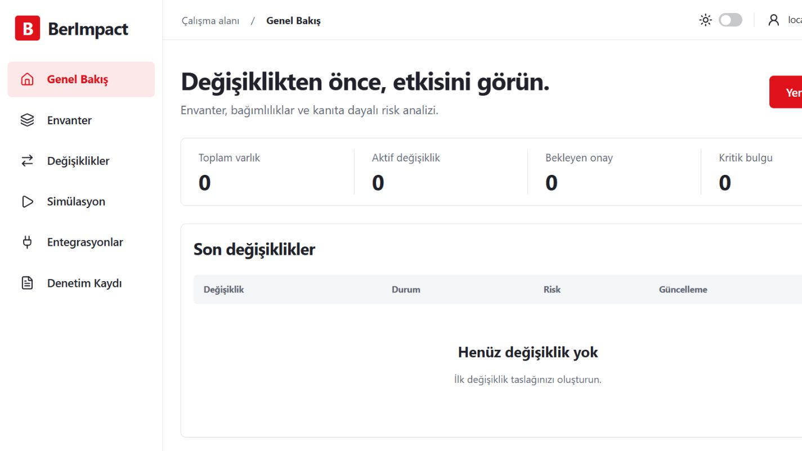
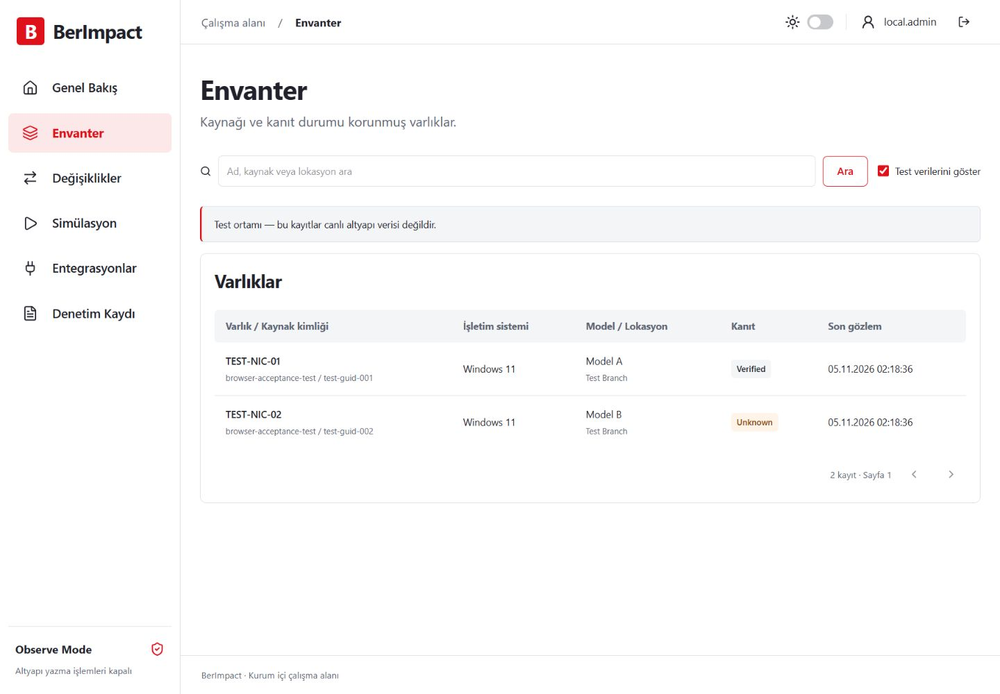
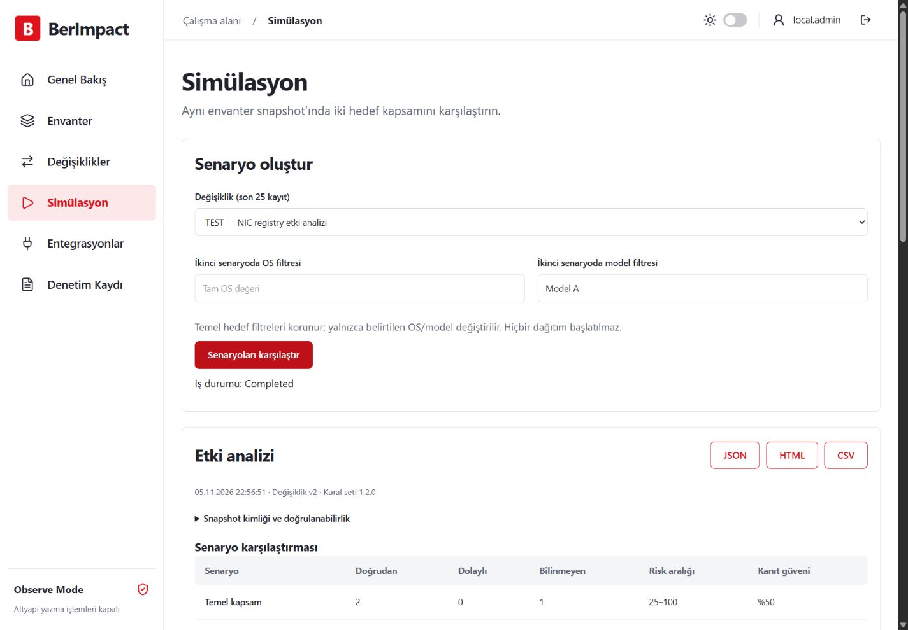

Kaynağı belli veri
JSON aktarımı, kalıcı kaynak kimlikleri ve güncellik bilgisi. Test kayıtları canlı veriden ayrılır.
0.1.1 · Ön sürüm · Observe Mode
Envanterinizi inceleyin, bağımlılıkları takip edin ve değişiklik senaryolarını karşılaştırın. Riskin yanında dayanağını da görün.

JSON aktarımı, kalıcı kaynak kimlikleri ve güncellik bilgisi. Test kayıtları canlı veriden ayrılır.
Doğrudan ve dolaylı etkiler, bağımlılık yolları ve risk aralığı. Eksik kanıt gizlenmez.
Aynı snapshot üzerinde kapsamları karşılaştırın. Pilot önerisini ve HTML, CSV, JSON raporlarını alın.


Linux Docker offline paketi ve Windows x64 paketi. Kurulum adımları ve SHA-256 dosyası sürümle birlikte.
Geliştirme ön sürümü. Altyapı dağıtımı kapalıdır. AD/GPO/SCCM/BigFix bağlantıları ve kurumsal ölçek kabul testleri henüz tamamlanmadı. Windows servis kurulumu ayrıca doğrulanmalıdır.
GitHub Pages yalnız bu tanıtım sayfasını sunar. Uygulama ve envanter kendi sunucunuzda çalışır.